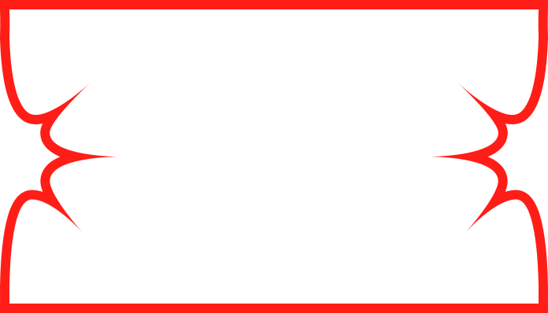

Paleta y para qué sirve cada color
Toca “Copiar” para llevarte el código. Los claros dan frescura, los oscuros dan estabilidad, el blanco da pausa.
Orden de uso: #FF1E17 acción principal → #BF0F0C secundaria / hover → #7F0000 profundo · #DC8EFF fondos suaves · #9D50BE secundarios · #5D117D jerarquía · #FFFFFF base
Letras con propósito
Kepler Std solo para títulos y frases grandes. Neulis Neue para todo lo que se lee seguido: texto, botones y menús. Incluye en tu web: <link rel="stylesheet" href="https://use.typekit.net/guo6nyk.css">
El cuerpo mantiene la calma frente al maximalismo. Espacio suficiente, lectura fácil para creadores y desarrolladores.
La jerarquía se hace con tamaño, peso y color, nunca solo con tamaño. Nunca bajes de 16px.
Botones y etiquetas con presencia
Pequeño / caption · Regular 14px — avisos y detalles
Itálica solo para acentos: citas o palabras clave.
No uses Kepler en párrafos largos ni menús. No mezcles muchos grosores en la misma parte. Acompaña el color con peso, borde o subrayado.
Aire estratégico y capas suaves
Todo se mide en múltiplos de 8px. Secciones separadas 64–96px. Ancho máximo 1440px centrado. Base plana, sombra solo para decir “esto se puede tocar”.
Escala (8 · 16 · 24 · 32 · 48 · 64 · 96)
Reposo, solo color.
sin sombraHover, se puede tocar.
0 2px 6pxDestacadas y menús.
0 6px 16pxVentanas y avisos.
0 10px 28pxSuperposición permitida si no tapa la lectura. Fondo oscuro 40–50% para enfocar. Profundidad también con tamaño, contraste y movimiento, no solo sombra.
Cómo se adapta (mobile-first)
| Pantalla | Columnas | Bordes | Entre partes |
|---|---|---|---|
| Móvil 320–599 | 1 | 16px | 32–48px |
| Tableta 600–1023 | 2–3 | 32–48px | 48–64px |
| Escritorio 1024–1439 | 12 | 48–64px | 64–96px |
| Amplio 1440+ | 12 centrado 1440px | extra como margen | 64–96px |
Orden redondeado + acentos libres
Rectángulo muy redondeado para lo útil (botones, tarjetas, campos). Formas libres y manchas solo como adorno puntual. En móvil se quitan si estorban.
Solo para chips y badges. No abuses de redondear todo: úsalo con intención.
Etiqueta ejemploManchas, ondas y curvas amplias que suavizan el contraste fuerte. Acompañan o se montan sobre fotos, nunca detrás de textos largos.
Piezas con cambio rojo ↔ morado
Pasa el mouse o toca para ver el cambio de color. Todo mide mínimo 44px para dedos y teclado.
Botones
Principal pasa a morado #5D117D. Secundario pasa a rojo #BF0F0C. Presionado usa #7F0000 y se encoge un poco. Fantasma sin fondo, cambia a la familia contraria y se subraya.
Etiquetas y avisos
Campos y enlaces
Revisa este campo, usa #7F0000.
Enlace base morado #5D117D — en hover cambia a rojo #FF1E17 y se subraya. Activo usa #BF0F0C o #9D50BE.
Íconos en morado o rojo. Al interactuar se invierten: rojo→morado, morado→rojo.
Tarjeta de proyecto con marco
La foto va dentro del marco ornamental, sin tarjeta cuadrada extra. Elige el color según la foto: busca contraste, no repitas siempre el mismo. Archivo: assets/Componentes/marco.svg

Si la foto es oscura usa rojo o lila claro. Si es clara o rosada usa morado profundo u oscuro.
El texto de cada proyecto va en un rectángulo horizontal muy redondeado, debajo del marco. Da calma frente a la forma expresiva.
Cursor estrella
Estrella de assets/Componentes/cursor_personalizado.svg. Sobre botón rojo se vuelve morada, sobre morado se vuelve roja. Mueve el mouse en el cuadro:
Nunca usa el mismo color de lo que está debajo.
Lo que sí y lo que no
Sí hazlo
- Usa rojo #FF1E17 y morado #5D117D para actuar y destacar.
- Repite el cambio rojo ↔ morado en hover.
- Kepler solo títulos, Neulis para leer.
- Retícula de 12 y aire amplio.
- Formas libres solo como adorno puntual.
- Blanco como descanso.
- Sombras suaves solo si ayudan.
- Se vale montar y asimetría si se lee claro.
No lo hagas
- No pongas todo con la misma fuerza, debe haber jerarquía.
- No llenes de adornos ni los pongas tras textos largos.
- No satures con muchos contrastes juntos.
- No uses Kepler en párrafos ni bajes de 16px.
- No avises solo con color, suma borde o subrayado.
- No sombras hondas ni 3D real.
- No texto poco legible ni adorno que tape botones.
- No metas colores nuevos ni dejes que el adorno mande.